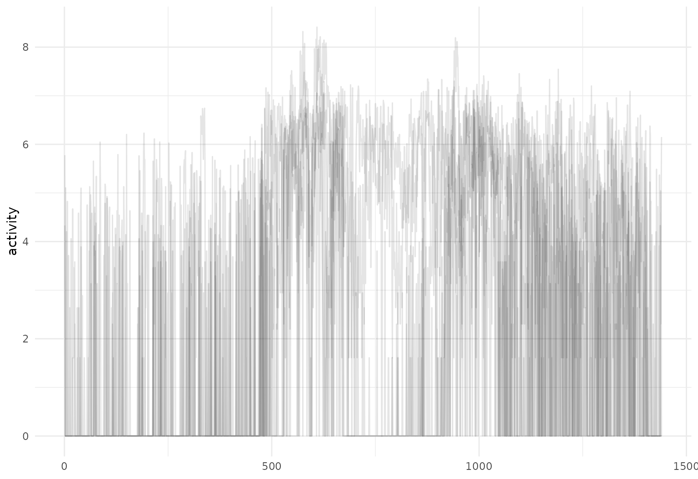
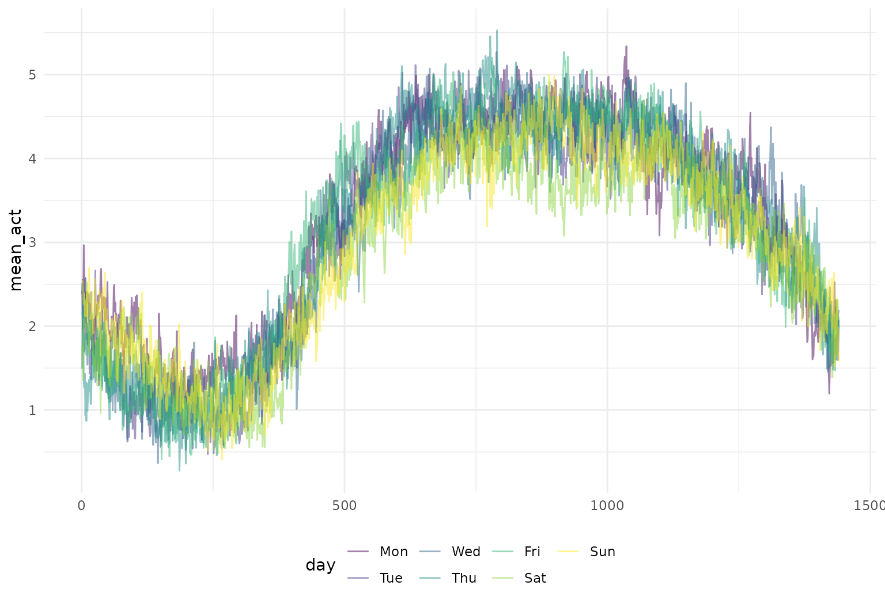
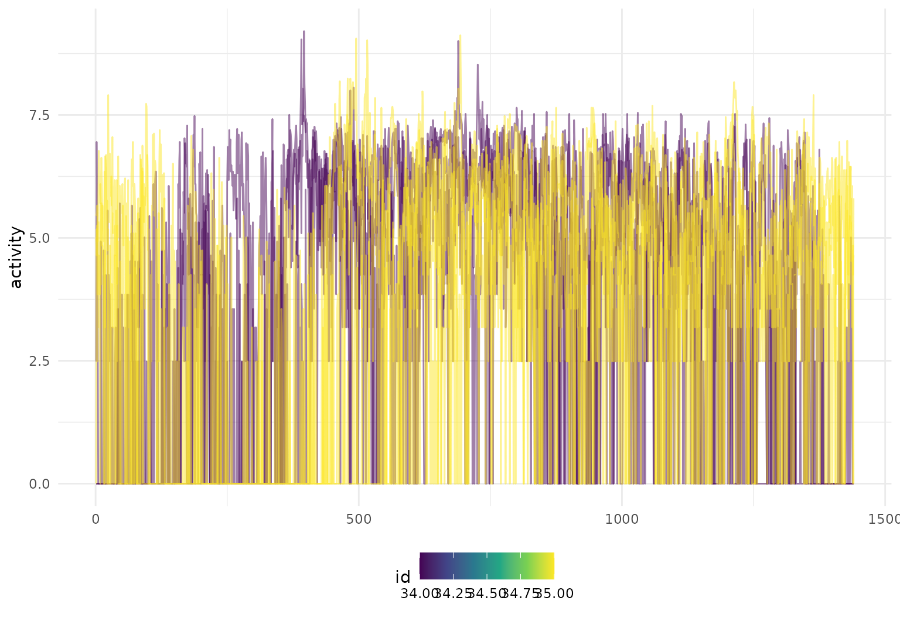
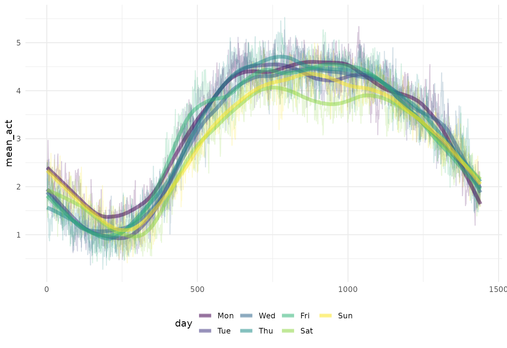
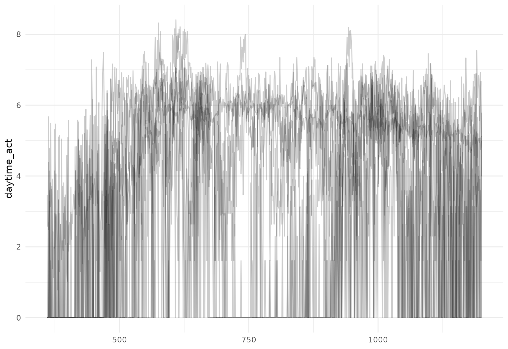

Data Wrangling
Jeff Goldsmith
2020-05-09
Source:vignettes/x03_Data_Wrangling.Rmd
x03_Data_Wrangling.Rmd
Data manipulation using tidyfun
The goal of tidyfun is to provide accessible and well-documented software that makes functional data analysis in R easy. In this vignette, we explore some aspects of data manipulation that are possible using tidyfun, emphasizing compatibility with the tidyverse.
Other vignettes have examined the tfd & tfb data types, and how to convert common formats for functional data (e.g. matrices, long- and wide-format data frames, fda objects) in these new data types. Because our goal is “tidy” data manipulation for functional data analysis, the result of data conversion processes has been a data frame in which a column contains the functional data of interest. This vignette starts from that point.
Throughout, we make use of some visualization tools – these are explained in more detail in the visualization vignette.
Example datasets
The datasets used in this vignette are the tidyfun::chf_df and tidyfun::dti_df dataset. The first contains minute-by-minute observations of log activity counts (stored as a tfd vector called activity) over seven days for each of 47 subjects with congestive heart failure. In addition to id and activity, we observe several covariates.
data(chf_df) chf_df ## # A tibble: 329 x 8 ## id gender age bmi event_week event_type day ## <dbl> <chr> <dbl> <dbl> <dbl> <chr> <ord> ## 1 1 Male 41 26 41 . Mon ## 2 1 Male 41 26 41 . Tue ## 3 1 Male 41 26 41 . Wed ## 4 1 Male 41 26 41 . Thu ## 5 1 Male 41 26 41 . Fri ## 6 1 Male 41 26 41 . Sat ## 7 1 Male 41 26 41 . Sun ## 8 3 Female 81 21 32 . Mon ## 9 3 Female 81 21 32 . Tue ## 10 3 Female 81 21 32 . Wed ## # … with 319 more rows, and 1 more variable: activity <tfd_reg>
A quick plot of these data is below.
chf_df %>% ggplot(aes(y = activity)) + geom_spaghetti(alpha = .05)

The tidyfun::dti_df contains ractional anisotropy (FA) tract profiles for the corpus callosum (cca) and the right corticospinal tract (rcst), along with several covariates.
data(dti_df) dti_df ## # A tibble: 382 x 6 ## id visit sex case cca ## <dbl> <int> <fct> <fct> <tfd_irrg> ## 1 1001 1 fema… cont… 1001_1: (0.000,0.49);(0.011,0.52);(0.022,0.54); ... ## 2 1002 1 fema… cont… 1002_1: (0.000,0.47);(0.011,0.49);(0.022,0.50); ... ## 3 1003 1 male cont… 1003_1: (0.000,0.50);(0.011,0.51);(0.022,0.54); ... ## 4 1004 1 male cont… 1004_1: (0.000,0.40);(0.011,0.42);(0.022,0.44); ... ## 5 1005 1 male cont… 1005_1: (0.000,0.40);(0.011,0.41);(0.022,0.40); ... ## 6 1006 1 male cont… 1006_1: (0.000,0.45);(0.011,0.45);(0.022,0.46); ... ## 7 1007 1 male cont… 1007_1: (0.000,0.55);(0.011,0.56);(0.022,0.56); ... ## 8 1008 1 male cont… 1008_1: (0.000,0.45);(0.011,0.48);(0.022,0.50); ... ## 9 1009 1 male cont… 1009_1: (0.000,0.50);(0.011,0.51);(0.022,0.52); ... ## 10 1010 1 male cont… 1010_1: (0.000,0.46);(0.011,0.47);(0.022,0.48); ... ## # … with 372 more rows, and 1 more variable: rcst <tfd_irrg>
A quick plot of the cca tract profiles is below.
dti_df %>% ggplot(aes(y = cca)) + geom_spaghetti(alpha = .05)

Existing tidyverse functions
Dataframes using tidyfun to store functional observations can be manipulated using tools from dplyr, including select and filter:
chf_df %>% select(id, day, activity) %>% filter(day == "Monday") %>% ggplot(aes(y = activity)) + geom_spaghetti(alpha = .05)

Operations using group_by and summarize are allowed:
chf_df %>% group_by(day) %>% summarize(mean_act = mean(activity)) %>% ggplot(aes(y = mean_act, color = day)) + geom_spaghetti()

One can mutate functional observations – here we exponentiate the log activity counts to obtain original recordings:
chf_df %>% mutate(exp_act = exp(activity)) %>% ggplot(aes(y = exp_act)) + geom_spaghetti(alpha = .05)

Functions for data manipulation from tidyr are also supported. We illustrate by using pivot_wider to create new tfd observations of activity for each day of the week:
chf_df %>% select(id, day, activity) %>% pivot_wider( names_from = day, values_from = activity) ## # A tibble: 47 x 8 ## id Mon Tue ## <dbl> <tfd_reg> <tfd_reg> ## 1 1 [1]: (1,0);(2,0);(3,0); ... [1]: (1,0);(2,0);(3,5); ... ## 2 3 [2]: (1,3);(2,5);(3,5); ... [2]: (1,0);(2,5);(3,6); ... ## 3 4 [3]: (1,0);(2,0);(3,0); ... [3]: (1,4);(2,0);(3,3); ... ## 4 5 [4]: (1,5);(2,4);(3,5); ... [4]: (1,4);(2,6);(3,7); ... ## 5 6 [5]: (1,0);(2,7);(3,0); ... [5]: (1,0);(2,0);(3,0); ... ## 6 7 [6]: (1,5);(2,7);(3,5); ... [6]: (1,4);(2,2);(3,5); ... ## 7 8 [7]: (1,0);(2,0);(3,0); ... [7]: (1,0);(2,0);(3,0); ... ## 8 9 [8]: (1,0);(2,0);(3,0); ... [8]: (1,2);(2,0);(3,0); ... ## 9 10 [9]: (1,0);(2,4);(3,0); ... [9]: (1,0);(2,0);(3,0); ... ## 10 11 [10]: (1,0);(2,0);(3,0); ... [10]: (1,0);(2,0);(3,0); ... ## # … with 37 more rows, and 5 more variables: Wed <tfd_reg>, Thu <tfd_reg>, ## # Fri <tfd_reg>, Sat <tfd_reg>, Sun <tfd_reg>
(Note that this has made the data less “tidy” and is therefore not generally recommended, but may be useful in some cases).
It’s also possible to join datasets based on non-functional keys. To illustrate, we’ll first create a pair of datasets:
monday_df = filter(chf_df, day == "Mon") %>% select(id, monday_act = activity) friday_df = filter(chf_df, day == "Fri") %>% select(id, friday_act = activity)
These can be joined using the id variable as a key (and then tidied using pivot_longer):
left_join(monday_df, friday_df, by = "id") %>% pivot_longer( monday_act:friday_act, names_to = "day", values_to = "activity") ## # A tibble: 94 x 3 ## id day activity ## <dbl> <chr> <tfd_reg> ## 1 1 monday_act [1]: (1,0);(2,0);(3,0); ... ## 2 1 friday_act [2]: (1,6);(2,0);(3,0); ... ## 3 3 monday_act [3]: (1,3);(2,5);(3,5); ... ## 4 3 friday_act [4]: (1,6);(2,6);(3,6); ... ## 5 4 monday_act [5]: (1,0);(2,0);(3,0); ... ## 6 4 friday_act [6]: (1,0);(2,0);(3,0); ... ## 7 5 monday_act [7]: (1,5);(2,4);(3,5); ... ## 8 5 friday_act [8]: (1,6);(2,2);(3,6); ... ## 9 6 monday_act [9]: (1,0);(2,7);(3,0); ... ## 10 6 friday_act [10]: (1,0);(2,0);(3,0); ... ## # … with 84 more rows
Similar tidying can be done for the DTI data.
dti_df %>% group_by(case, sex) %>% summarize(mean_rcst = mean(rcst, na.rm = TRUE)) %>% ggplot(aes(y = mean_rcst, color = case)) + geom_spaghetti(size = 2) + facet_grid(~sex)

New tidyfun functions
Some dplyr functions are useful in conjunction with new functions in tidyfun. For example, one might use filter with tf_anywhere to filter based on the values of observed functions:
chf_df %>% filter(tf_anywhere(activity, value > 9)) %>% ggplot(aes(y = activity)) + geom_spaghetti()

A second example of this functionality in the DTI data is below.
dti_df %>% filter(tf_anywhere(cca, value < .26)) %>% ggplot(aes(y = cca)) + geom_spaghetti()

The existing mutate function can be combined with several tidyfun functions, including tf_smooth, tf_zoom, and tf_deriv.
One can smooth existing observations using tf_smooth:
chf_df %>% filter(id == 1) %>% mutate(smooth_act = tf_smooth(activity)) %>% ggplot(aes(y = smooth_act)) + geom_spaghetti() ## using f = 0.15 as smoother span for lowess

This can be combined with previous steps, like group_by and summarize, to build intution through descriptive plots and summaries:
chf_df %>% group_by(day) %>% summarize(mean_act = mean(activity)) %>% mutate(smooth_mean = tf_smooth(mean_act)) %>% ggplot(aes(y = mean_act, color = day)) + geom_spaghetti(alpha = .2) + geom_spaghetti(aes(y = smooth_mean), size = 2) ## using f = 0.15 as smoother span for lowess

One can also extract observations over a subset of the full domain using tf_zoom:
chf_df %>% filter(id == 1) %>% mutate(daytime_act = tf_zoom(activity, 360, 1200)) %>% ggplot(aes(y = daytime_act)) + geom_spaghetti()

It’s possible to compute derivatives as part of a processing pipeline.
dti_df %>% mutate( cca_smooth = tfb(cca, k = 15, verbose = FALSE), cca_deriv = tf_derive(cca_smooth) ) %>% ggplot(aes(y = cca_deriv)) + geom_spaghetti()

Lastly, we note that it’s possible to convert from tfd to tfb vectors; this can be done inside a mutate statement as part of a data processing pipeline:
chf_df %>% mutate(act_basis = tfb(activity)) %>% select(id, gender, act_basis) ## Percentage of input data variability preserved in basis representation ## (per functional observation, approximate): ## Min. 1st Qu. Median Mean 3rd Qu. Max. NA's ## 16.80 41.60 50.25 49.57 57.55 88.70 1 ## # A tibble: 329 x 3 ## id gender act_basis ## <dbl> <chr> <tfb_spln> ## 1 1 Male [1]: (1, -0.2);(2, -0.2);(3, -0.1); ... ## 2 1 Male [2]: (1, 0.4);(2, 0.4);(3, 0.4); ... ## 3 1 Male [3]: (1,-0.07);(2,-0.06);(3,-0.06); ... ## 4 1 Male [4]: (1, 0.7);(2, 0.7);(3, 0.7); ... ## 5 1 Male [5]: (1, 0.6);(2, 0.6);(3, 0.6); ... ## 6 1 Male [6]: (1, 0.2);(2, 0.2);(3, 0.3); ... ## 7 1 Male [7]: (1, 5);(2, 5);(3, 5); ... ## 8 3 Female [8]: (1, 5);(2, 5);(3, 5); ... ## 9 3 Female [9]: (1, 2);(2, 1);(3, 1); ... ## 10 3 Female [10]: (1, 4);(2, 3);(3, 3); ... ## # … with 319 more rows
Some not-allowed tidying
Unfortunately, based on the existing infrastructure for non-standard data types in dplyr, some operations are not possible at this time. The most important of these to note are binds.
Using the datasets defined above, it would ideally be possible to combine these using bind_rows, but the following code does not work:
bind_rows(monday_df, friday_df) ## Warning in bind_rows_(x, .id): Vectorizing 'tfd_reg' elements may not preserve ## their attributes ## Warning in bind_rows_(x, .id): Vectorizing 'tfd_reg' elements may not preserve ## their attributes ## # A tibble: 94 x 3 ## id monday_act friday_act ## <dbl> <list> <list> ## 1 1 <dbl [1,440]> <NULL> ## 2 3 <dbl [1,440]> <NULL> ## 3 4 <dbl [1,440]> <NULL> ## 4 5 <dbl [1,440]> <NULL> ## 5 6 <dbl [1,440]> <NULL> ## 6 7 <dbl [1,440]> <NULL> ## 7 8 <dbl [1,440]> <NULL> ## 8 9 <dbl [1,440]> <NULL> ## 9 10 <dbl [1,440]> <NULL> ## 10 11 <dbl [1,440]> <NULL> ## # … with 84 more rows
In many cases, the need for this operation can be avoided through suitable data wrangling prior to converting functional data to a tf object. It’s also possible to avoid bind_rows by using rbind, which still works. See tidyfun/issues/53 for a discussion of related issues.